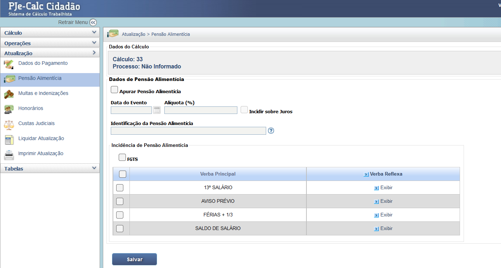

Manual Interativo de Cálculos Trabalhistas
Um guia completo e interativo para entender os cálculos na esfera judicial trabalhista.
Configuração de Pensão Alimentícia (Atualização)
O módulo Pensão Alimentícia (acessado via Atualização) é utilizado para calcular o valor da pensão alimentícia que deve ser descontado das verbas remuneratórias do reclamante, conforme determinação judicial. Este módulo aplica o percentual determinado sobre a base de cálculo das verbas trabalhistas.
1. Apuração e Parâmetros
Para ativar a dedução da pensão, é necessário marcar a opção "Apurar Pensão Alimentícia". Em seguida, informe a Alíquota (%) determinada para o desconto e a Data do Evento, que define o início da atualização do valor, se aplicável. Marque "Incidir sobre Juros" se a pensão também deve ser descontada dos juros de mora devidos ao reclamante.
2. Incidência da Pensão
A seção Incidência de Pensão Alimentícia lista todas as verbas do cálculo, permitindo selecionar quais delas deverão sofrer o desconto da pensão, de acordo com o título judicial que determinou a obrigação.
- FGTS: Deve-se marcar a caixa ao lado de "FGTS" se a pensão também incidir sobre o Fundo de Garantia.
- Verbas: Marque as caixas individuais para verbas como 13º Salário, Aviso Prévio e Férias + 1/3, conforme a decisão.
Após selecionar todas as verbas de incidência e preencher os dados percentuais, clique em "Salvar" para registrar a configuração. Posteriormente, para visualizar o desconto no resumo, utilize a opção "Liquidar Atualização" no menu lateral.